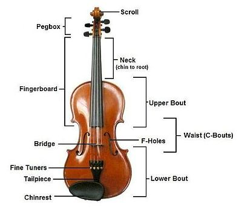

<html>
    <link rel="stylesheet" type="text/css" href="style.css">
</html>
<body>
    <div class="c1">Violin Parts</div>
    
    <div style="margin-top:50px"></div>
    <div class="f5" id="b5">
        <p class="c1"><u>Benefits of playing violin</u></p>
        <p id="id2">Increased arm strength: You may find yourself tiring quickly after playing the violin when you first start out. This is completely normal</p>
        <p id="id2">Improved posture: Another one of the benefits of playing violin is that it requires you to sit up straight and tall.</p>
        <p id="id2">Sharpened memory: Your muscle memory will improve as you become more proficient at playing violin.</p>
        <p id="id2">Enhanced self-discipline: The only way you can expect to improve is by practicing. It’s not a task you can hand off to someone else.</p>
        <p id="id2">Increased feelings of accomplishment: When you dedicate yourself to learning the violin, it can feel like an awesome accomplishment.</p>
    </div>
</body>